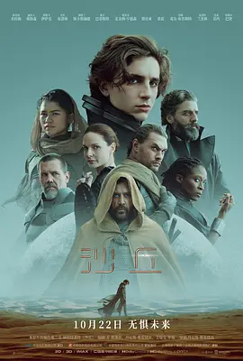
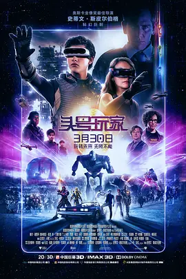

相关电影

盗梦空间

黑客帝国

沙丘
银翼杀手2049

头号玩家

星际穿越
2020 / 科幻 动作 / 美国 / 克里斯托弗·诺兰
乌克兰基辅国家歌剧院，一伙蒙面歹徒突然闯入演出大厅，挟持在场数百名音乐家和观众。未过多久，乌克兰特警部队迅速赶到，并按照既定战术突入进去。与此同时，几名神秘之人换上特警部队肩章，趁乱潜入歌剧院，救出被困的美国大使。神秘人之一的男主“无名”（约翰·大卫·华盛顿 John David Washington 饰）虽然一度顺利完成任务，却身不由己置身死地。当他再度醒来，则被告知失去原有身份，此后将加入一个名为“信条”的秘密组织，去执行一项阻止世界毁灭的重大任务。早在歌剧院时，他便见识了一次逆转子弹的奇怪现象。而如今着手的任务，似乎正与逆转的子弹乃至逆转的时间息息相关。
注定发生的必然会发生，所种何因，便结何果……
用户A： 看完电影出来下楼差点走了上行的电梯🙃
用户B： “别去试图理解它，去感受它。”真的被诺兰逼疯了，感觉智商完全下线。和他之前任何一部电影体验都不一样，不是简单玩技术或结构，你必须完全进入到逆世界的设定里，看他把扭转时空和悖论的东西在缜密逻辑和高速爆炸的信息组合后进一步复杂化。第一遍基本只能看看视觉奇观和故事脉络，待多刷后再尝试理清逻辑吧。
用户C： 不是一遍能看懂的一部诺兰，但也是在视觉呈现、叙事结构上再赋新意、再造巅峰的一部。从来只有单讲时间逆转和时空穿越的，却从来没有在一个画面里把正向和逆向时间同时呈现的。它如《盗梦空间》的那个折叠城市，首尾完美张合，开头即结局。最后一场大战，将为IMAX观影带来前所未有、目瞪口呆的银幕体验。两男主的相遇，勘为一道恍如隔世的弧光，泪目。看完《信条》你会产生一个这样的念头：诺兰所有的作品，将以《信条》为中心，形成过去和未来的完美交互。它是一个圆点和轴心，也是导演对自己创作理念的终极倒放和正反打。（就不用担心评论剧透了，想剧透可能都无从下手…
盗梦空间
黑客帝国
沙丘
银翼杀手2049
头号玩家
星际穿越